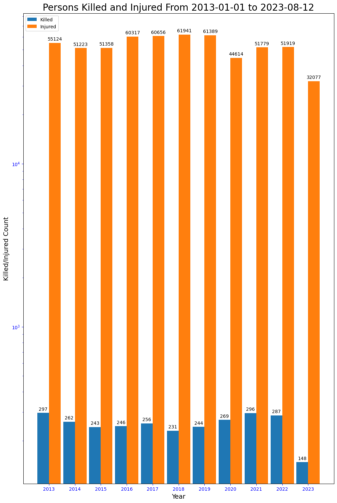
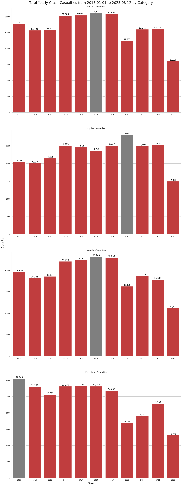
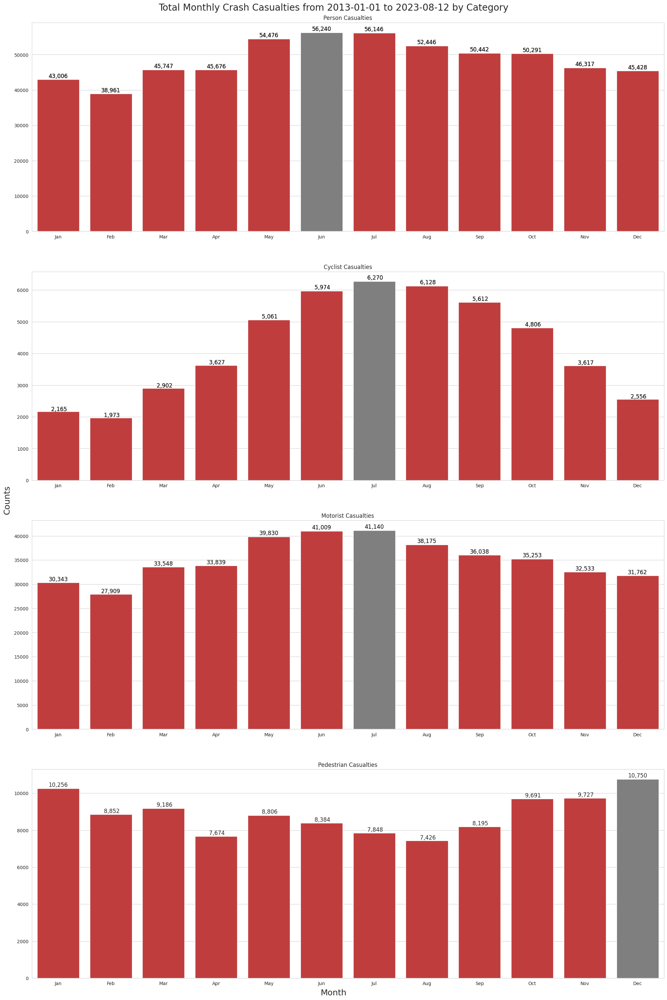
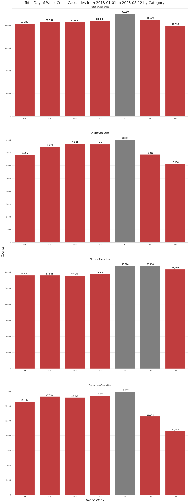
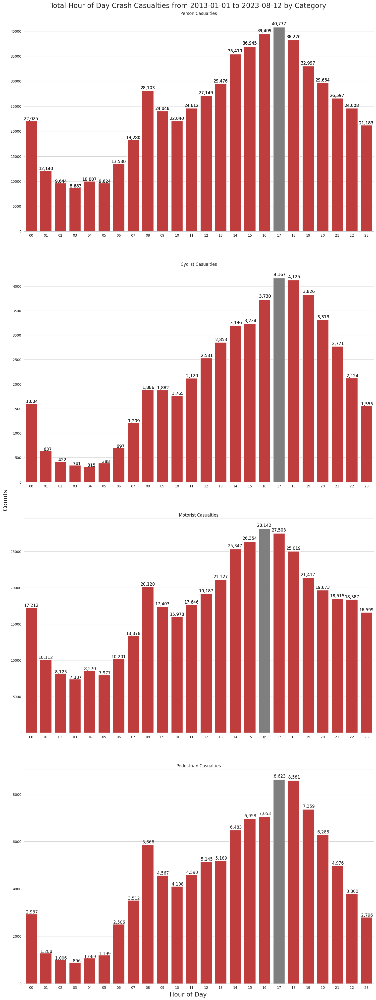

# Import All Required Python Modules
import numpy as np
import pandas as pd
import datetime
import matplotlib.pyplot as plt
import seaborn as snsNYC Collision Data Analysis
Focusing on casualty statistics over different time periods
# Data Formatting Functions
def empty_to_zero(val):
'''Converts empty values to 0'''
val = val.strip('\s+')
return val if len(val) else 0
def convert_to_numeric(df, column_list):
'''Given a list of DataFrame columns, it converts the empty values to zero'''
df[column_list] = df[column_list].apply(pd.to_numeric, errors='coerce')# Set Up Some Global Variables
# I'm omitting longitude, latitude, the vehicle types as well as crash contributing factors.
cols_requested = ['COLLISION_ID', 'CRASH DATE', 'CRASH TIME', 'BOROUGH', 'ZIP CODE', 'LOCATION', 'ON STREET NAME', 'CROSS STREET NAME', 'OFF STREET NAME', 'NUMBER OF PERSONS INJURED',
'NUMBER OF PERSONS KILLED', 'NUMBER OF PEDESTRIANS INJURED', 'NUMBER OF PEDESTRIANS KILLED', 'NUMBER OF CYCLIST INJURED', 'NUMBER OF CYCLIST KILLED', 'NUMBER OF MOTORIST INJURED', 'NUMBER OF MOTORIST KILLED']
# To ensure that the colums are of the expected data type
crash_dtypes = {'CRASH DATE': str,
'CRASH TIME': str,
'BOROUGH': str,
'ZIP CODE': str,
'LOCATION': str,
'ON STREET NAME': str,
'CROSS STREET NAME': str,
'OFF STREET NAME': str,
}
# Rename some colums to ones that I believe are shorter and/or more meaningful
cols_rename = {'CRASH DATE': 'DATE',
'CRASH TIME': 'TIME',
'ZIP CODE': 'ZIP_CODE',
'ON STREET NAME': 'ON_STREET_NAME',
'CROSS STREET NAME': 'CROSS_STREET_NAME',
'OFF STREET NAME': 'OFF_STREET_NAME',
'NUMBER OF PERSONS INJURED': 'NUM_PERSONS_INJURED',
'NUMBER OF PERSONS KILLED': 'NUM_PERSONS_KILLED',
'NUMBER OF PEDESTRIANS INJURED': 'NUM_PEDESTRIANS_INJURED',
'NUMBER OF PEDESTRIANS KILLED': 'NUM_PEDESTRIANS_KILLED',
'NUMBER OF CYCLIST INJURED': 'NUM_CYCLISTS_INJURED',
'NUMBER OF CYCLIST KILLED': 'NUM_CYCLISTS_KILLED',
'NUMBER OF MOTORIST INJURED': 'NUM_MOTORISTS_INJURED',
'NUMBER OF MOTORIST KILLED': 'NUM_MOTORISTS_KILLED'
}
# Columns that contain numeric values
numeric_cols = ['NUM_PERSONS_INJURED',
'NUM_PERSONS_KILLED',
'NUM_PEDESTRIANS_INJURED',
'NUM_PEDESTRIANS_KILLED',
'NUM_CYCLISTS_INJURED',
'NUM_CYCLISTS_KILLED',
'NUM_MOTORISTS_INJURED',
'NUM_MOTORISTS_KILLED']
# These ordered lists are useful for plotting charts
day_names_order = ["Monday", "Tuesday", "Wednesday",
"Thursday", "Friday", "Saturday", "Sunday"]
day_abbr_order = [d[0:3] for d in day_names_order]
month_names_order = ["January", "February", "March", "April", "May",
"June", "July", "August", "September", "October", "November", "December"]
month_abbr_order = [m[0:3] for m in month_names_order]
# The following DataFrame columns that will have their empty values converted to zero using the
# 'empty_to_zero' function
convert_cols = {
'NUMBER OF PERSONS INJURED': empty_to_zero,
'NUMBER OF PERSONS KILLED': empty_to_zero,
'NUMBER OF PEDESTRIANS INJURED': empty_to_zero,
'NUMBER OF PEDESTRIANS KILLED': empty_to_zero,
'NUMBER OF CYCLIST INJURED': empty_to_zero,
'NUMBER OF CYCLIST KILLED': empty_to_zero,
'NUMBER OF MOTORIST INJURED': empty_to_zero,
'NUMBER OF MOTORIST KILLED': empty_to_zero
}
# These are the 4 categories supplied by the NYPD
# 'person' status should be a combination of the other three categories
# TODO I need to verify the relationship between 'person' and the other three categories
victim_categories = ['person', 'cyclist', 'motorist', 'pedestrian']
# These are the Matplotlib Tableau colors
bar_colors = ['tab:blue', 'tab:orange', 'tab:green', 'tab:red',
'tab:purple', 'tab:brown', 'tab:pink', 'tab:gray', 'tab:olive', 'tab:cyan']
base_colors = ['b', 'g', 'r', 'c', 'm', 'y', 'k', 'w']
# Chart Colors
color = 'k'
plt.rcParams['text.color'] = color
plt.rcParams['axes.labelcolor'] = color
plt.rcParams['xtick.color'] = 'b'
plt.rcParams['ytick.color'] = 'b'Read the NYC collision data CSV file.
The Collision Dataset provided by NYPD is available here.
# Using the Pandas 'read_csv' function
crash = pd.read_csv('../Motor_Vehicle_Collisions_Aug15_2023.csv',
index_col='COLLISION_ID', usecols=cols_requested, dtype=crash_dtypes, converters=convert_cols)Print out the column names before and after they are renamed
original_col_names = crash.columns.to_list()
print("Original Crash Column Names")
print(original_col_names)
# Rename the columns using the list of new names, 'cols_rename'
crash.rename(columns=cols_rename, inplace=True)
print("Renamed Crash Columns Names")
print(crash.columns.to_list())Original Crash Column Names
['CRASH DATE', 'CRASH TIME', 'BOROUGH', 'ZIP CODE', 'LOCATION', 'ON STREET NAME', 'CROSS STREET NAME', 'OFF STREET NAME', 'NUMBER OF PERSONS INJURED', 'NUMBER OF PERSONS KILLED', 'NUMBER OF PEDESTRIANS INJURED', 'NUMBER OF PEDESTRIANS KILLED', 'NUMBER OF CYCLIST INJURED', 'NUMBER OF CYCLIST KILLED', 'NUMBER OF MOTORIST INJURED', 'NUMBER OF MOTORIST KILLED']
Renamed Crash Columns Names
['DATE', 'TIME', 'BOROUGH', 'ZIP_CODE', 'LOCATION', 'ON_STREET_NAME', 'CROSS_STREET_NAME', 'OFF_STREET_NAME', 'NUM_PERSONS_INJURED', 'NUM_PERSONS_KILLED', 'NUM_PEDESTRIANS_INJURED', 'NUM_PEDESTRIANS_KILLED', 'NUM_CYCLISTS_INJURED', 'NUM_CYCLISTS_KILLED', 'NUM_MOTORISTS_INJURED', 'NUM_MOTORISTS_KILLED']# Ensure that the 'numeric_cols' column values are numeric and not string values
convert_to_numeric(crash, numeric_cols)# General Description of the dataset.
# The 'set_option' is uesed here to display numeric values as a 'float' rather
# than the default scientific notation
pd.set_option('display.float_format', lambda x: '%8.2f' % x)
crash.describe()| NUM_PERSONS_INJURED | NUM_PERSONS_KILLED | NUM_PEDESTRIANS_INJURED | NUM_PEDESTRIANS_KILLED | NUM_CYCLISTS_INJURED | NUM_CYCLISTS_KILLED | NUM_MOTORISTS_INJURED | NUM_MOTORISTS_KILLED | |
|---|---|---|---|---|---|---|---|---|
| count | 2017370.00 | 2017370.00 | 2017370.00 | 2017370.00 | 2017370.00 | 2017370.00 | 2017370.00 | 2017370.00 |
| mean | 0.30 | 0.00 | 0.06 | 0.00 | 0.03 | 0.00 | 0.22 | 0.00 |
| std | 0.69 | 0.04 | 0.24 | 0.03 | 0.16 | 0.01 | 0.65 | 0.03 |
| min | 0.00 | 0.00 | 0.00 | 0.00 | 0.00 | 0.00 | 0.00 | 0.00 |
| 25% | 0.00 | 0.00 | 0.00 | 0.00 | 0.00 | 0.00 | 0.00 | 0.00 |
| 50% | 0.00 | 0.00 | 0.00 | 0.00 | 0.00 | 0.00 | 0.00 | 0.00 |
| 75% | 0.00 | 0.00 | 0.00 | 0.00 | 0.00 | 0.00 | 0.00 | 0.00 |
| max | 43.00 | 8.00 | 27.00 | 6.00 | 4.00 | 2.00 | 43.00 | 5.00 |
Merge the ‘DATE’ and ‘TIME’ columns into one ‘DATE’ column.
The original ‘DATE’ is a “date only” field without the time. After merging the date and time columns, convert ‘DATE’ to a Python “datetime” object. Then remove the now unnecessary ‘TIME’ column.
# Merge
crash['DATE'] = pd.to_datetime(crash['DATE'] + " " + crash['TIME'])
# Remove the 'TIME' column
crash.drop(columns=['TIME'], inplace=True)
# Convert to Python 'datetime'
crash['DATE'] = pd.to_datetime(crash['DATE'])crash['DATE'].describe()count 2017370
mean 2017-05-13 17:54:54.650598912
min 2012-07-01 00:05:00
25% 2014-12-19 13:00:15
50% 2017-03-29 10:07:30
75% 2019-06-09 17:50:00
max 2023-08-12 23:56:00
Name: DATE, dtype: objectFrom the crash['DATE'].describe()
We can see that the first collision record (min) was on July 7, 2012 The last record (max), for this iteration is August 12, 2023.
# Create a "start_date" and "end_date" variable, which is useful for our charts
start_date = crash['DATE'].dt.date.min()
end_date = crash['DATE'].dt.date.max()
print("Start Date: {0} - End Date: {1}".format(start_date, end_date))Start Date: 2012-07-01 - End Date: 2023-08-12The ‘UNKNOWN’ Borough
The BOROUGH column contains the 5 boroughs of New York City, BROOKLYN, BRONX, MANHATTAN, QUEENS and STATEN ISLAND.
Unfortunately, many of the ‘BOROUGH’ fields are empty.
The NYPD don’t record the borough in certain situations. For example, if the collision occurred on one of the main bridges between boroughs, or if the collision occurred on any one of NYC’s many expressways or parkways. Further investigation would be needed to confirm this.
I previously reached out to the open data team for more information on this, but got no reply.
# Replace empty 'BOROUGH' values with 'UNKNOWN'
crash.fillna(value={'BOROUGH': 'UNKNOWN'}, inplace=True)
crash['BOROUGH'].describe()count 2017370
unique 6
top UNKNOWN
freq 627585
Name: BOROUGH, dtype: objectcrash['BOROUGH'].describe() provides some useful information.
- unique
- Unique borough name count, which includes the ‘UNKNOWN’ borough
- top
- ‘UNKNOWN’ is the most frequent borough recorded
- freq
- Tells us the occurrence of ‘UNKNOWN’ borough records
- count
- How many rows of data in the dataset
# Another check to see the unique borough names
crash['BOROUGH'].unique()array(['UNKNOWN', 'BROOKLYN', 'BRONX', 'MANHATTAN', 'QUEENS',
'STATEN ISLAND'], dtype=object)ZIP_CODE
As with the BOROUGH column, the postal ZIP_CODE is often left empty. In this case, using crash['ZIP_CODE'].describe(), we see that the ZIP_CODE with the most collisions, top, is 11207 in Brooklyn. The freq gives a count of collisions for this zip code. It has a pretty large population, almost 80,000 people, which may account for the large numbers. A future project would be to see how these zip code counts relate to their population. The unique number tells us that there are 234 NYC zip codes with recorded collisions.
Check out zip code, 11207 here.
crash['ZIP_CODE'].describe()count 1389547
unique 234
top 11207
freq 26853
Name: ZIP_CODE, dtype: object# Replace empty ZIP_CODE's with 'UNKNOWN'
crash.fillna(value={'ZIP_CODE': 'UNKNOWN'}, inplace=True)
crash['ZIP_CODE'].head()COLLISION_ID
4455765 UNKNOWN
4513547 UNKNOWN
4541903 UNKNOWN
4456314 11208
4486609 11233
Name: ZIP_CODE, dtype: objectCode
# Set up some date columns: YEAR, MONTH_NAME, DAY_NAME, HOUR
# and remove any records for 2012
crash['YEAR'] = crash['DATE'].dt.year
# Get rid of 2012 as it only has 6 months of data
no_2012_mask = crash['YEAR'] > 2012
crash = crash[no_2012_mask]
# Reset the start_date variable to reflect the change
start_date = crash['DATE'].dt.date.min()
year_order = crash['YEAR'].sort_values().unique()
print("Year order: {}".format(year_order))
# Create a MONTH_NAME column. Actually, month abbreviated name
crash['MONTH_NAME'] = crash['DATE'].dt.month_name().str[0:3]
print("Month abbreviations: {}".format(crash.MONTH_NAME.unique()))
# Create a HOUR column, which reflects the hour of day that the collision occurred
crash['HOUR'] = crash['DATE'].dt.strftime("%H")
# Need to convert hour_order to a Python list instead of Numpy array
hour_order = crash['HOUR'].sort_values().unique().tolist()
print("Hour order: {}".format(hour_order))
crash['DAY_NAME'] = crash['DATE'].dt.strftime("%a")Year order: [2013 2014 2015 2016 2017 2018 2019 2020 2021 2022 2023]
Month abbreviations: ['Sep' 'Mar' 'Jun' 'Dec' 'Apr' 'Jul' 'Feb' 'Aug' 'Nov' 'May' 'Jan' 'Oct']
Hour order: ['00', '01', '02', '03', '04', '05', '06', '07', '08', '09', '10', '11', '12', '13', '14', '15', '16', '17', '18', '19', '20', '21', '22', '23']The Worst Years for Collision Injuries and Deaths
Code
# Get the Yearly Killed/Injured counts
crash_by_year_killed = crash.groupby(
'YEAR')['NUM_PERSONS_KILLED'].sum().sort_values(ascending=False)
crash_by_year_injured = crash.groupby(
'YEAR')['NUM_PERSONS_INJURED'].sum().sort_values(ascending=False)
print("5 Worst Years for Collision Deaths")
print(crash_by_year_killed.head(5))
print("\n5 Worst Years for Collision Injuries")
print(crash_by_year_injured.head(5))5 Worst Years for Collision Deaths
YEAR
2013 297
2021 296
2022 287
2020 269
2014 262
Name: NUM_PERSONS_KILLED, dtype: int64
5 Worst Years for Collision Injuries
YEAR
2018 61941
2019 61389
2017 60656
2016 60317
2013 55124
Name: NUM_PERSONS_INJURED, dtype: int64Chart the Yearly Collisin Injuries and Deaths
Code
# Create a plot using Matplotlib with Yearly details on the number of people killed and injured
killed_injured = {
'Killed': crash_by_year_killed.loc[year_order], 'Injured': crash_by_year_injured.loc[year_order]}
x = np.arange(len(year_order)) # the label locations
width = 0.45 # the width of the bars
multiplier = 0
fig, ax = plt.subplots(figsize=(10, 15), layout='constrained')
# Create the Injured/Killed bars for each year
for killed_or_injured, count in killed_injured.items():
offset = width * multiplier
rects = ax.bar(x + offset, count, width, label=killed_or_injured)
ax.bar_label(rects, padding=3)
multiplier += 1
# Add some text for labels, title and custom x-axis tick labels, etc.
ax.set_xlabel('Year', fontsize=14)
ax.set_ylabel('Killed/Injured Count', fontsize=14)
ax.set_title('Persons Killed and Injured From {0} to {1}'.format(
start_date, end_date), fontsize=20)
ax.set_xticks(x + (width/2), year_order)
ax.legend(loc='upper left')
ax.set_yscale('log')
plt.show()
Collision Injuries and Deaths since 2013
The chart shows that traffic fatalities had a general downward trend froom the high or 297 in 2013 to a low of 231 in 2018. The trend is upwards from 2019 to 2021, which was just 1 off the worst year, 2013. For injuries, 2016 to 2019 were the worst. The following years are a slight improvement, but no visible downward trend yet.
Combine Killed + Injured Counts into one ‘CASUALTIES’ column
For each category, Person, Pedestrian, Cyclist and Motorist I’m going to combine the Killed/Injured counts into one ‘CASUALTY’ count.
# Combine the INJURED and KILLED columns into one 'CASUALTIES' column.
crash['PERSON_CASUALTY_COUNT'] = crash.NUM_PERSONS_INJURED + \
crash.NUM_PERSONS_KILLED
crash['PEDESTRIAN_CASUALTY_COUNT'] = crash.NUM_PEDESTRIANS_INJURED + \
crash.NUM_PEDESTRIANS_KILLED
crash['CYCLIST_CASUALTY_COUNT'] = crash.NUM_CYCLISTS_INJURED + \
crash.NUM_CYCLISTS_KILLED
crash['MOTORIST_CASUALTY_COUNT'] = crash.NUM_MOTORISTS_INJURED + \
crash.NUM_MOTORISTS_KILLED
crash.head(60)
kmm = (crash.NUM_PERSONS_KILLED > 0) & (crash.NUM_PERSONS_INJURED > 0)
# Check that it looks good
crash[kmm][['NUM_PERSONS_KILLED', 'NUM_PERSONS_INJURED',
'PERSON_CASUALTY_COUNT']].head()| NUM_PERSONS_KILLED | NUM_PERSONS_INJURED | PERSON_CASUALTY_COUNT | |
|---|---|---|---|
| COLLISION_ID | |||
| 4407693 | 1 | 4 | 5 |
| 4457151 | 1 | 1 | 2 |
| 4457192 | 1 | 2 | 3 |
| 4457191 | 1 | 3 | 4 |
| 4487497 | 1 | 1 | 2 |
'''
Function to print count values above or to the side of chart bars
I got the original function from this useful site, https://www.statology.org
Original Fuction: https://www.statology.org/seaborn-barplot-show-values/
'''
def show_values(axs, orient="v", space=.01):
def _single(ax):
if orient == "v":
for p in ax.patches:
_x = p.get_x() + p.get_width() / 2
_y = p.get_y() + p.get_height() + (p.get_height()*0.01)
value = '{:6,.0f}'.format(p.get_height())
ax.text(_x, _y, value, ha="center", fontsize=12)
elif orient == "h":
for p in ax.patches:
_x = p.get_x() + p.get_width() + float(space)
_y = p.get_y() + p.get_height() - (p.get_height()*0.5)
value = '{:6,.0f}'.format(p.get_width())
ax.text(_x, _y, value, ha="left", fontsize=12)
if isinstance(axs, np.ndarray):
for idx, ax in np.ndenumerate(axs):
_single(ax)
else:
_single(axs)'''
Helper functions for creating multiple charts based on Grouped statistics
Grouped time periods can be 'HOUR', 'MONTH', 'YEAR', 'DAY_NAME'
Statistics will be created for the below columns.
PERSON_CASUALTY_COUNT
PEDESTRIAN_CASUALTY_COUNT
CYCLIST_CASUALTY_COUNT
MOTORIST_CASUALTY_COUNT
'''
def create_grouped_casualty_data_by_category(victim_categories, time_group="YEAR", order_list=None):
'''
time_group can be 'HOUR', 'DAY_OF_WEEK', 'MONTH', 'YEAR'
'''
time_group = time_group.upper()
all_casualty_data = []
for category in victim_categories:
cat_upper = category.upper()
casualty_label = cat_upper + '_CASUALTY_COUNT'
casualty_data = crash.groupby(
by=[time_group], as_index=True).agg({casualty_label: 'sum'})
if order_list and len(order_list):
casualty_data = casualty_data.loc[order_list]
category_data = {
'category': category,
'casualty_label': casualty_label,
'casualty_data': casualty_data
}
all_casualty_data.append(category_data)
return all_casualty_data
def create_bar_plots_for_casualty_data(sns, axes, order_list, crash_victims_data):
for idx, category_data in enumerate(crash_victims_data):
xlabel = None
ylabel = None
# Casualty Chart
category_title = category_data['category'].title()
chart_title = "{0} Casualties".format(category_title)
casualty_max = category_data['casualty_data'][category_data['casualty_label']].max(
)
casualty_values = category_data['casualty_data'][category_data['casualty_label']].to_list(
)
casualty_colors = ['tab:gray' if (
x >= casualty_max) else 'tab:red' for x in casualty_values]
ax = axes[idx]
sns.barplot(data=category_data['casualty_data'], x=order_list, order=order_list,
y=category_data['casualty_label'], palette=casualty_colors, ax=ax).set(title=chart_title, xlabel=xlabel, ylabel=ylabel)
show_values(axes)'''
Set some global chart variables
'''
title_fontsize = 20
label_fontsize = 18
# For spacing between charts on one grid
gridspec_kw = {'wspace': 0.1, 'hspace': 0.1}
sns.set_style("whitegrid")''' Plot charts for crash casualties based on the Year'''
col_ct = 1
# Create the outer figure box
fig, axes = plt.subplots(4, col_ct, figsize=(
15, 40), layout="constrained", gridspec_kw=gridspec_kw)
fig.suptitle("Total Yearly Crash Casualties from {0} to {1} by Category".format(
start_date, end_date), fontsize=title_fontsize)
fig.supxlabel("Year", fontsize=label_fontsize)
fig.supylabel("Counts", fontsize=label_fontsize)
crash_casualty_data = create_grouped_casualty_data_by_category(
victim_categories, 'year')
create_bar_plots_for_casualty_data(
sns, axes, year_order, crash_casualty_data)
''' Plot charts for crash casualties based on the Month'''
# Create the outer figure box
col_ct = 1
fig, axes = plt.subplots(4, col_ct, figsize=(
20, 30), layout="constrained", gridspec_kw=gridspec_kw)
fig.suptitle("Total Monthly Crash Casualties from {0} to {1} by Category".format(
start_date, end_date), fontsize=title_fontsize)
fig.supxlabel("Month", fontsize=label_fontsize)
fig.supylabel("Counts", fontsize=label_fontsize)
crash_casualty_data = create_grouped_casualty_data_by_category(
victim_categories, 'month_name', month_abbr_order)
create_bar_plots_for_casualty_data(
sns, axes, month_abbr_order, crash_casualty_data)
'''
Plot Charts for Day of Week Statistics
'''
col_ct = 1
fig, axes = plt.subplots(4, col_ct, figsize=(
15, 40), layout="constrained", gridspec_kw=gridspec_kw)
fig.suptitle("Total Day of Week Crash Casualties from {0} to {1} by Category".format(
start_date, end_date), fontsize=title_fontsize)
fig.supxlabel("Day of Week", fontsize=label_fontsize)
fig.supylabel("Counts", fontsize=label_fontsize)
# crash.set_index('MONTH_NAME').loc[month_abbr_order].groupby(by=['MONTH_NAME']).agg({'PEDESTRIAN_CASUALTY_COUNT': 'sum'}).plot(kind='bar')
crash_casualty_data = create_grouped_casualty_data_by_category(
victim_categories, 'day_name', day_abbr_order)
crash_casualty_data
create_bar_plots_for_casualty_data(
sns, axes, day_abbr_order, crash_casualty_data)
''' Plot charts for crash casualties based on the Hour of Day'''
# Create the outer figure box
col_ct = 1
fig, axes = plt.subplots(4, col_ct, figsize=(
15, 40), layout="constrained", gridspec_kw=gridspec_kw)
fig.suptitle("Total Hour of Day Crash Casualties from {0} to {1} by Category".format(
start_date, end_date), fontsize=title_fontsize)
fig.supxlabel("Hour of Day", fontsize=label_fontsize)
fig.supylabel("Counts", fontsize=label_fontsize)
crash_casualty_data = create_grouped_casualty_data_by_category(
victim_categories, 'hour', hour_order)
# Create the inner charts
create_bar_plots_for_casualty_data(
sns, axes, hour_order, crash_casualty_data)
crash.groupby(by=['YEAR']).agg({'NUM_CYCLISTS_KILLED': 'sum', 'NUM_CYCLISTS_INJURED': 'sum'}).sort_values(
by=['NUM_CYCLISTS_KILLED', 'NUM_CYCLISTS_INJURED'], ascending=False)| NUM_CYCLISTS_KILLED | NUM_CYCLISTS_INJURED | |
|---|---|---|
| YEAR | ||
| 2019 | 31 | 4986 |
| 2020 | 29 | 5576 |
| 2017 | 27 | 4889 |
| 2023 | 21 | 2977 |
| 2014 | 20 | 4000 |
| 2022 | 19 | 5026 |
| 2021 | 19 | 4961 |
| 2016 | 18 | 4975 |
| 2015 | 15 | 4281 |
| 2013 | 11 | 4075 |
| 2018 | 10 | 4725 |
# hide
crash.groupby(by=['YEAR']).agg({'NUM_PEDESTRIANS_KILLED': 'sum', 'NUM_PEDESTRIANS_INJURED': 'sum'}).sort_values(
by=['NUM_PEDESTRIANS_INJURED', 'NUM_PEDESTRIANS_KILLED'], ascending=False)
# by=['NUM_PEDESTRIANS_KILLED', 'NUM_PEDESTRIANS_INJURED'], ascending=False)| NUM_PEDESTRIANS_KILLED | NUM_PEDESTRIANS_INJURED | |
|---|---|---|
| YEAR | ||
| 2013 | 176 | 11988 |
| 2017 | 127 | 11151 |
| 2018 | 123 | 11123 |
| 2016 | 149 | 11090 |
| 2014 | 133 | 11036 |
| 2019 | 131 | 10568 |
| 2015 | 133 | 10084 |
| 2022 | 132 | 8975 |
| 2021 | 131 | 7501 |
| 2020 | 101 | 6691 |
| 2023 | 53 | 5199 |
killed_ped_month_group = crash.groupby(by=['MONTH_NAME']).agg({'NUM_PEDESTRIANS_KILLED': 'sum'}).sort_values(
by=['NUM_PEDESTRIANS_KILLED'], ascending=False)
killed_ped_month_group.head()| NUM_PEDESTRIANS_KILLED | |
|---|---|
| MONTH_NAME | |
| Nov | 151 |
| Oct | 138 |
| Dec | 136 |
| Jan | 123 |
| Sep | 117 |
injured_ped_month_group = crash.groupby(by=['MONTH_NAME']).agg({'NUM_PEDESTRIANS_INJURED': 'sum'}).sort_values(
by=['NUM_PEDESTRIANS_INJURED'], ascending=False)
injured_ped_month_group.head()| NUM_PEDESTRIANS_INJURED | |
|---|---|
| MONTH_NAME | |
| Dec | 10614 |
| Jan | 10133 |
| Nov | 9576 |
| Oct | 9553 |
| Mar | 9079 |
killed_cyc_month_group = crash.groupby(by=['MONTH_NAME']).agg({'NUM_CYCLISTS_KILLED': 'sum'}).sort_values(
by=['NUM_CYCLISTS_KILLED'], ascending=False)
killed_cyc_month_group.head()| NUM_CYCLISTS_KILLED | |
|---|---|
| MONTH_NAME | |
| Jun | 36 |
| Jul | 26 |
| Sep | 25 |
| Aug | 20 |
| May | 20 |
killed_mot_month_group = crash.groupby(
'MONTH_NAME')['NUM_MOTORISTS_KILLED'].sum().sort_values(ascending=False)
killed_mot_month_group.head(12)MONTH_NAME
Jul 131
Jun 126
Aug 124
May 108
Sep 104
Apr 93
Nov 86
Oct 81
Jan 73
Dec 72
Feb 67
Mar 66
Name: NUM_MOTORISTS_KILLED, dtype: int64innjured_mot_month_group = crash.groupby(
'MONTH_NAME')['NUM_MOTORISTS_INJURED'].sum().sort_values(ascending=False)
innjured_mot_month_group.head(12)MONTH_NAME
Jul 41009
Jun 40883
May 39722
Aug 38051
Sep 35934
Oct 35172
Apr 33746
Mar 33482
Nov 32447
Dec 31690
Jan 30270
Feb 27842
Name: NUM_MOTORISTS_INJURED, dtype: int64killed_injured_by_zip = crash.groupby(by=['ZIP_CODE']).agg({'NUM_PERSONS_KILLED': 'sum', 'NUM_PERSONS_INJURED': 'sum'}).sort_values(
by=['NUM_PERSONS_KILLED', 'NUM_PERSONS_INJURED'], ascending=False)
injured_killed_by_zip = crash.groupby(by=['ZIP_CODE']).agg({'NUM_PERSONS_KILLED': 'sum', 'NUM_PERSONS_INJURED': 'sum'}).sort_values(
by=['NUM_PERSONS_INJURED', 'NUM_PERSONS_KILLED'], ascending=False)
print(" 5 Worst zip codes for crash deaths.")
print(killed_injured_by_zip.head(5))
print(" 5 Worst zip codes for crash injuries.")
print(injured_killed_by_zip.head(5)) 5 Worst zip codes for crash deaths.
NUM_PERSONS_KILLED NUM_PERSONS_INJURED
ZIP_CODE
UNKNOWN 1145 205507
11236 45 7482
11207 32 9956
11234 28 5460
11208 25 6044
5 Worst zip codes for crash injuries.
NUM_PERSONS_KILLED NUM_PERSONS_INJURED
ZIP_CODE
UNKNOWN 1145 205507
11207 32 9956
11236 45 7482
11203 13 7367
11212 17 6631